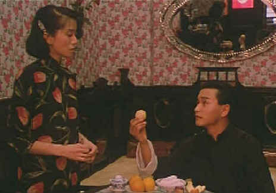

Media Asia/1987/93m/WS 1.66
Fleur is a stunner working at a Hong Kong brothel in 1934. You have to plunk down $HK200 to trace the lines of her calf or perhaps 300 to stroke an ear lobe. Chen-Pang is a prosperous merchant’s son who becomes infatuated with her. Fleur plays on his desires and he woos her like a virgin. It’s only a matter of time and pursuit before they fall passionately in love. This is not the marriage match Chen-Pang’s middle class parents had in mind; concubine yes, wife no. When they refuse to accept the relationship, Fleur influences Chen-Pang to become an actor in the Peking Opera and they set up house keeping together. Between puffs on the opium pipe their union appears as fragile as the smoke rising from the numbing fumes.
 |
Chen-Pang courts Fleur©Media Asia |
More than fifty years later
they young and beautiful Fleur shows up at a newspaper office to place an advertisement in
search of Chen-Pang. She pursues the young man who works at the newspaper office until he
agrees to help her. He and his girlfriend begin to hunt for a lead to the whereabouts of
Fleur’s long-lost lover.
One of the great strengths of Rouge is the lack of special
effect embellishment. Every time you think some screen trick will propel the story, Kwan
chooses a quick camera cut and a return to an empty street or doorway. The restraint is
highly effective in emphasizing the love story. And Rouge is primarily a tale
forged in passion. Kwan’s camera is elegantly direct. His characters illuminate this
beautiful romance. Anita Mui plays Fleur with great balance. She walks the jagged pathway
of her fate with an innocent confidence. Leslie Cheung is effective as a charming if
decadent Chen-Pang.
This is one of the better Hong Kong DVD releases. Presented widescreen
1.66, the DVD is consistently sharp. Colors remain vital in various lighting
circumstances. The removable English subtitles are reasonably coordinated with the
dialogue and appear over the picture. I have yet to view a Hong Kong import that had
terrific Dolby Digital 5:1 surround. The music sounds pretty good in Rouge, but it’s
quite bright. Surround information is limited.
If you enjoy Rouge, check out another Stanley Kwan title, Center
Stage, starring the incandescent Maggie Cheung as real-life actress Ruan Ling Yu. It’s
also available as a Hong Kong import from Media Asia.